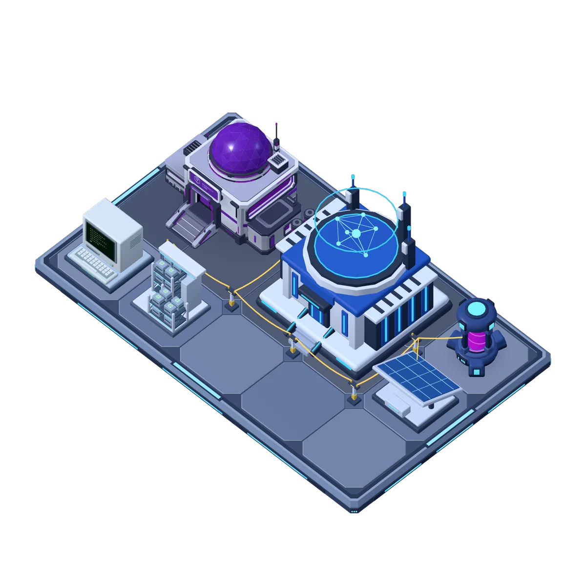
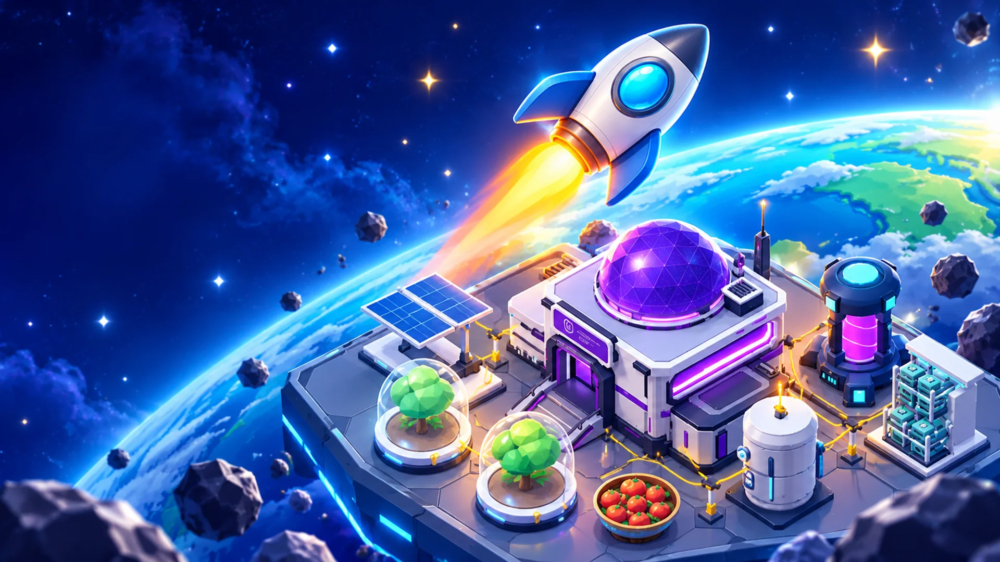
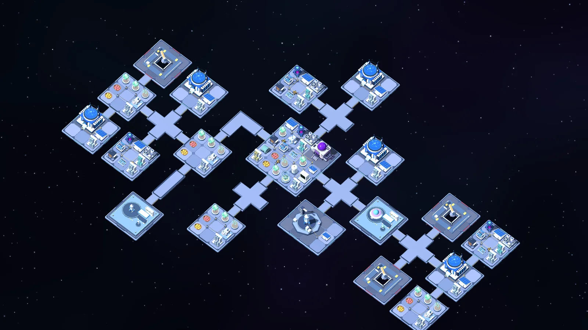
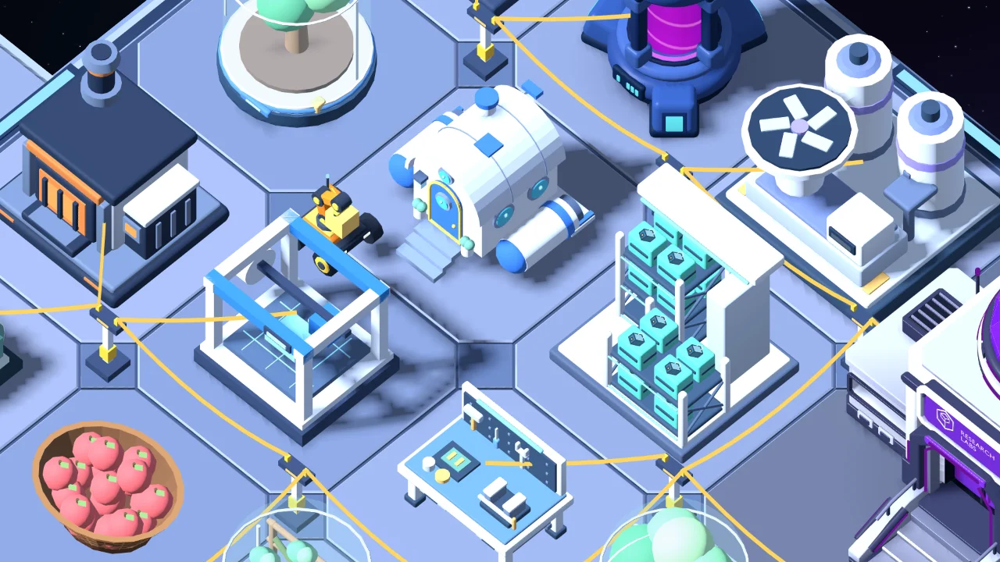
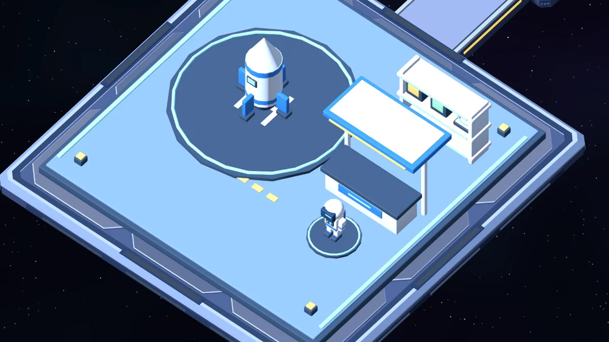
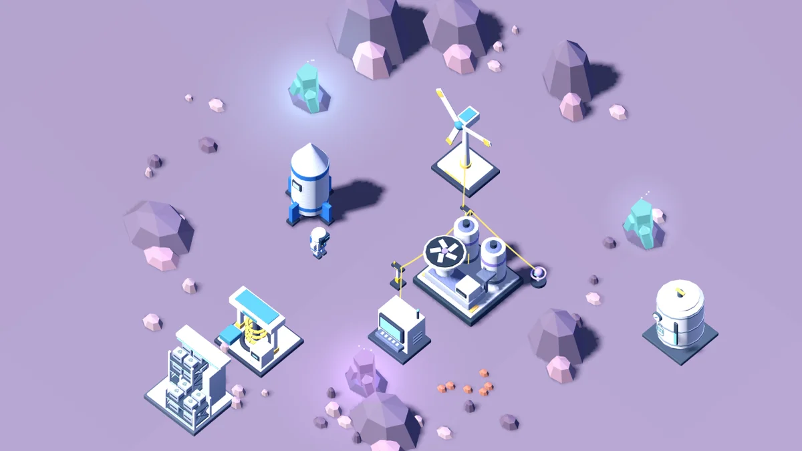

Les bonnes idées méritent un laboratoire.
Faites progresser la science et la technologie, découvrez des améliorations et préparez votre lanceur pour la prochaine expédition.

VOTRE PROCHAINE AVENTURE SPATIALE
Space Explorer: Idle TycoonUn vaisseau. Une plateforme. Vos idées. Développez votre activité spatiale, reliez vos machines et faites le prochain grand saut vers l’inconnu.
ANDROID · JEU GRATUIT
01 / POSEZ VOS FONDATIONS
Disposez les plateformes, reliez-les par des ponts et faites compter chaque connexion. Du premier panneau solaire à un vaste réseau, vous décidez comment votre base évolue.

SPACE EXPLORER / BASE 01
02 / RELIEZ LES POSSIBILITÉS
Transformez la ferraille en kits d’assemblage. Alimentez vos machines, configurez les capteurs et faites travailler votre robot collecteur. La prochaine amélioration commence par une production mieux pensée.
03 / CONTINUEZ À PROGRESSER

Faites progresser la science et la technologie, découvrez des améliorations et préparez votre lanceur pour la prochaine expédition.

Accueillez des extraterrestres et des astronautes. Échangez vos produits et investissez dans votre prochaine idée.
CINQ DESTINATIONS. VOTRE PROCHAINE FRONTIÈRE.
Préparez carburant et provisions, découvrez des ressources et installez une base sur un autre monde. Chaque destination demande un nouveau plan.

L’AVENTURE, DE PLUS PRÈS
Découvrez la construction, les cultures, l’automatisation, la recherche, l’exploration et le commerce. Illustrations en anglais.
DÉCOUVREZ VOTRE PROCHAINE AVENTURE
30 secondes de construction, d’automatisation et d’exploration. Le son reste coupé jusqu’à son activation.
AVANT LE DÉCOLLAGE
Un jeu de construction et de gestion spatiale avec une progression idle et incrémentale. Organisez votre base, connectez la production et avancez dans la recherche et l’exploration.
Le téléchargement est gratuit, avec des publicités et des achats intégrés facultatifs. Google Play indique la disponibilité selon votre pays et votre appareil.
Oui. Une connexion internet est nécessaire pour jouer et sauvegarder votre progression en ligne.
Le jeu propose l’anglais et le portugais. Les autres traductions de ce site ne modifient pas les langues disponibles dans le jeu.
UNE PETITE PLATEFORME. VOTRE PROCHAINE GRANDE IDÉE.
Construisez. Connectez. Découvrez la suite.
Télécharger sur Google PlayInternet requis. Publicités et achats intégrés facultatifs.